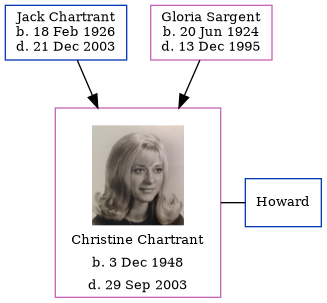

Christine Ann Howard (née Chartrant) 1948 - 2003
[ Home ] | [ Calendar ] | [ Surnames Index ] | [ Errors ] | [ Family History ]The child of Jack Chartrant and Gloria Sargent, Christine Chartrant, the sixth cousin on the mother's side of Nigel Horne, was born in Detroit, Wayne, Michigan, USA on 3 Dec 19481,2. She was married to Howard.
She died on 29 Sept 2003 in Reno, Washoe, Nevada, USA2.
Parents
- Jack Edward was born on 18 Feb 1926
- Gloria B was born on 20 Jun 1924
Citations
- Social Security Death Index - Findmypast
- United States Obituary Notices - Findmypast
Media
Christine Ann Chartrant
Social Security Death Index - USBMD/SSDI/373529885
Family Tree
Map
Generated by ged2site. Last updated on Jul 3, 2024